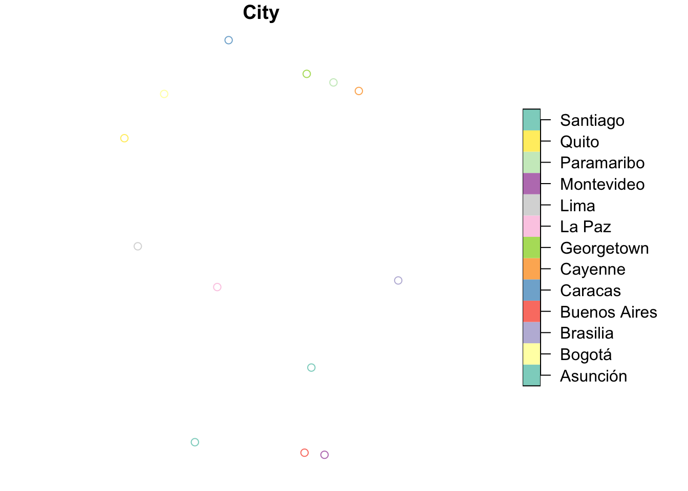
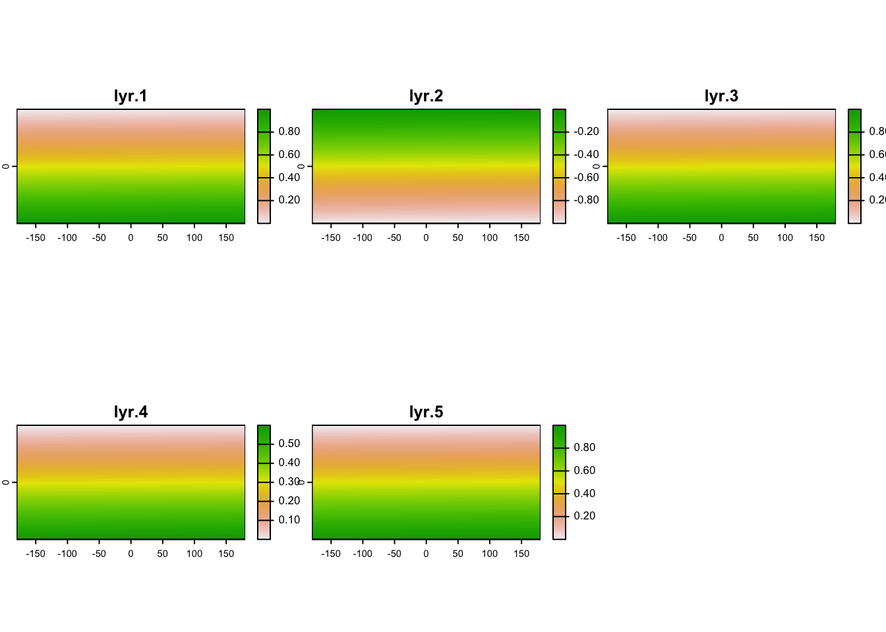

Spatial Data in R
Tidyverse
ggplot2
R
terra
sf
Mapping
GIS
An Introduction look at spatial analyses, plotting, manipulation and combination.

Data Types
Generally, when we talk about spatial data the minimum requirements are having some form of spatial information (often called geometry or shape) and some additional information. This spatial information is normally an x and a y coordinate (but may contain z and time).
Vector Data
The most common spatial data is collectively called Vector Data and is generally more discrete spatial, such as individual points, lines or polygons. For example, we might have the location of capital cities (Point) or the route of a river system (Line) or shape of country borders of a country (Polygon).
Raster Data
Another common spatial data style is Raster Data, which is more continuous spatially and is sometimes called a spatial field or gridded data. For example bathymetry or elevation of an area will be a grid of x and y spatial cells with a bathymetry or elevation value for each ‘cell’ of the grid.
Spatial Basics: Vector Data
Create Vector Data
As we see above, we can combine all these data types to make displays of our data. But also we can combine these data types to perform more complex manipulations or analyses. First of all lets bring in some vector data with the sf package. The sf package allows us to bring in our vector data easily and inspect, manipulate and plot it in a very similar way to using a normal dataframe. The only difference is that we have a column called geometry that stores the spatial data for each row. Above in the map of south america with the amazon and capital cities we had a combination of different vector spatial data.
The first data type, point data can be created by ourselves in r, without having to read any data in. First we make a data frame with the information of each point (latitude, longitude, name), then we use sf to convert this df to an sf object, telling sf which columns are our geomtry info and what coordinate reference system we are working in. This wasn’t very automatic as I found the values online and copy and pasted them into r.
library(tidyverse)
library(sf)
Points_df<-data.frame(
City=c(
"Brasilia", "Quito", "Santiago",
"Lima", "Buenos Aires", "La Paz",
"Bogotá", "Asunción", "Montevideo",
"Caracas", "Cayenne", "Paramaribo",
"Georgetown"
) ,
Long=c(-47.9297,-78.5250,-70.6483,-77.0282,
-58.4004,-68.1500,-74.0818,-57.6359,
-56.1674,-66.8792,-52.3333,-55.1668,-58.1553),
Lat=c(-15.7797, -0.2299, -33.4569, -12.0432,
-34.6051, -16.5000, 4.6097, -25.3007,
-34.8335, 10.4880, 4.9333, 5.8664, 6.8045)
)
head(Points_df) City Long Lat
1 Brasilia -47.9297 -15.7797
2 Quito -78.5250 -0.2299
3 Santiago -70.6483 -33.4569
4 Lima -77.0282 -12.0432
5 Buenos Aires -58.4004 -34.6051
6 La Paz -68.1500 -16.5000Points_sf<-Points_df%>%
st_as_sf(coords=c("Long","Lat") ) %>%
st_set_crs("EPSG:4326")
head(Points_sf)Simple feature collection with 6 features and 1 field
Geometry type: POINT
Dimension: XY
Bounding box: xmin: -78.525 ymin: -34.6051 xmax: -47.9297 ymax: -0.2299
Geodetic CRS: WGS 84
City geometry
1 Brasilia POINT (-47.9297 -15.7797)
2 Quito POINT (-78.525 -0.2299)
3 Santiago POINT (-70.6483 -33.4569)
4 Lima POINT (-77.0282 -12.0432)
5 Buenos Aires POINT (-58.4004 -34.6051)
6 La Paz POINT (-68.15 -16.5)We can see when we inspect the sf object it has more spatial information that sf has assigned to the df when converting. As r recognises an sf object as being spatial now we can use the base plot function to look at the point locations. This isn’t an amazing plot as there is not much information in the sf object, just city names.
plot(Points_sf)
As it acts just like any other dataframe we can add data, subset, manipulate and join in the same way we would with tidyverse.
Fake_ElevationData<-runif(13,min=0,max=3000)
Points_sf_Elevate<-Points_sf %>%
mutate(Elev=Fake_ElevationData)
Location_Bogota<-Points_sf_Elevate %>%
filter(City=="Bogotá")Load Open Access Vector Data
We can also perform analyses between different spatial objects. So if we get spatial information for boundaries of countries in the world we can use our capital cities to join and subset the dataset. We will use the naturalhires suite of packages to get polygons of world boundaries. Lets bring in the data using a 10 metre resolution, convert it to an sf object and check it has worked well.
library(rnaturalearth)
library(rnaturalearthdata)
#remotes::install_github("ropensci/rnaturalearthhires")
library(rnaturalearthhires)
world_map <- sovereignty10 %>%
st_as_sf()
ggplot(world_map)+
geom_sf(aes(fill=REGION_UN),alpha=0.7)+
theme_classic()We can also inspect the information attached to each row in the sf file for each country. But i will select some specific columns of interest to neaten the dataset up first.
world_map<-world_map %>%
select(SOVEREIGNT,ADM0_A3,CONTINENT,
REGION_UN,SUBREGION,POP_EST,
POP_RANK, POP_YEAR, GDP_MD, GDP_YEAR)
head(world_map)Simple feature collection with 6 features and 10 fields
Geometry type: MULTIPOLYGON
Dimension: XY
Bounding box: xmin: -109.4537 ymin: -55.9185 xmax: 140.9776 ymax: 7.35578
Geodetic CRS: WGS 84
SOVEREIGNT ADM0_A3 CONTINENT REGION_UN SUBREGION POP_EST
1 Indonesia IDN Asia Asia South-Eastern Asia 270625568
2 Malaysia MYS Asia Asia South-Eastern Asia 31949777
3 Chile CHL South America Americas South America 18952038
4 Bolivia BOL South America Americas South America 11513100
5 Peru PER South America Americas South America 32510453
6 Argentina ARG South America Americas South America 44938712
POP_RANK POP_YEAR GDP_MD GDP_YEAR geometry
1 17 2019 1119190 2019 MULTIPOLYGON (((117.7036 4....
2 15 2019 364681 2019 MULTIPOLYGON (((117.7036 4....
3 14 2019 282318 2019 MULTIPOLYGON (((-69.51009 -...
4 14 2019 40895 2019 MULTIPOLYGON (((-69.51009 -...
5 15 2019 226848 2019 MULTIPOLYGON (((-69.51009 -...
6 15 2019 445445 2019 MULTIPOLYGON (((-67.1939 -2...If we plot our cities on top of the countries we can see it is only a select few cities that we have. Maybe we want to extract only the polygons that one of our cities lands inside of spatially?
ggplot(world_map)+
geom_sf()+
geom_sf(data=Points_sf,fill="#dbb13b",colour="white",shape=23,size=3)+
theme_classic()We can use a join to combine the sf objects. To carry out spatial joins we need to tell sf that we want to work in two d space (not a true sphere).
sf_use_s2(FALSE)Spherical geometry (s2) switched offSouthAmerica<-world_map %>%
st_join(Points_sf,left=F)although coordinates are longitude/latitude, st_intersects assumes that they
are planarggplot(SouthAmerica)+
geom_sf()+
theme_classic()Hmm this is looking a bit weird, we seem to have gained all the French lands. This is because in our world_map sf object, we had multiple polygons per row. Therefore, the row that contained the French Guiana also contained all of Frances territories. So perhaps we want to do a spatial filter. There are many ways to do this, the simplest is to create a bounding box then subset the SouthAmerica sf based on the new spatial object. Lets create a bounding box then plot it over our map to see where it is.
ylims <- c(-65, 20)
xlims <- c(-100, -20)
box_coords <- tibble(x = xlims, y = ylims) %>%
st_as_sf(coords = c("x", "y"),crs="EPSG:4326") %>%
st_bbox()%>%
st_as_sfc()
ggplot(SouthAmerica)+
geom_sf()+
geom_sf(data=box_coords,colour="red",fill=NA)+
theme_classic()This looks like a good subset for now.
SouthAmerica_subset <- st_intersection(SouthAmerica, box_coords)although coordinates are longitude/latitude, st_intersection assumes that they
are planarWarning: attribute variables are assumed to be spatially constant throughout
all geometriesggplot(SouthAmerica_subset)+
geom_sf()+
geom_sf(data=box_coords,colour="red",fill=NA)+
theme_classic()Much Better!
Load Local Vector Data
So lets get some Vector Data and load it into r from our local system. I downloaded river shape file from: https://datacatalog.worldbank.org/search/dataset/0042032/Major-Rivers-of-the-World
Rivers<-st_read("majorrivers_0_0/MajorRivers.shp",quiet=T)
ggplot(Rivers)+
geom_sf(colour="#6cc3d5")+
theme_classic()This looks to be correct, so lets do as before and select the rivers that are in south america. We could select the Amazon by using dplyr::filter(SYSEM==“Amazon”) but lets reuse our bounding box from earlier to select all rivers in south america.
SouthAmerica_rivers <- st_intersection(Rivers, box_coords)although coordinates are longitude/latitude, st_intersection assumes that they
are planarWarning: attribute variables are assumed to be spatially constant throughout
all geometriesggplot(SouthAmerica_rivers)+
geom_sf(colour="#6cc3d5")+
geom_sf(data=box_coords,colour="red",fill=NA)+
theme_classic()There are extra bits of information in this sf that we can treat just like a normal df. How long are all the rivers in south america? (In this shape file that is)
sum(SouthAmerica_rivers$KILOMETERS)[1] 39700.29Which is the maximum?
SouthAmerica_rivers %>%
filter(KILOMETERS == max(KILOMETERS))Simple feature collection with 1 feature and 4 fields
Geometry type: MULTILINESTRING
Dimension: XY
Bounding box: xmin: -73.5079 ymin: -4.459834 xmax: -52.70839 ymax: -1.583623
Geodetic CRS: WGS 84
NAME SYSTEM MILES KILOMETERS geometry
1 Amazon Amazon 1890.428 3042.355 MULTILINESTRING ((-73.5079 ...The Amazon, surprisingly!
Lets combine all these Vector data into a single plot.
ggplot(SouthAmerica_subset)+
geom_sf(linewidth=0.1,alpha=0.8,
fill="palegreen3",colour="grey30")+
geom_sf(data=SouthAmerica_rivers,colour="#6cc3d5")+
geom_sf(data=Points_sf,aes(colour=City))+
geom_sf(data=box_coords,colour="red",fill=NA)+
theme_classic()Spatial Basics: Raster Data
Create Raster Data
Like with all data forms in r, see vector data above, we can create our own version of raster data. The most important information for raster data is the dimensions (x, y, z, etc.), the resolution (how big each pixel is) and its extent (where it is in space). We can make a random noise raster, then inspect it by plotting it. Rasters in r generally are well plotted by the base plot() function. But we can also use the tidyterra package, which adds a new geom_* to ggplot.
library(terra)
library(tidyterra)
r<-rast(ncol=100,nrow=100,nlyrs=5)
values(r[[1]])<-sort(runif(1:ncell(r)))
values(r[[2]])<-values(r[[1]])*-1
values(r[[3]])<-sort(runif(1:ncell(r)))
values(r[[4]])<-values(r[[3]])*0.6
values(r[[5]])<-sort(runif(1:ncell(r)))
plot(r)
ggplot()+
geom_spatraster(data=r)+
facet_wrap(~lyr)+
scale_fill_terrain_c()+
theme_classic()So far we haven’t added any information about where this raster is. We can inspect it to find what are its dimensions, resolution and extent.
dim(r)[1] 100 100 5res(r)[1] 3.6 1.8ext(r)SpatExtent : -180, 180, -90, 90 (xmin, xmax, ymin, ymax)We can see that this raster has 100 rows, 100 columns and 5 layers. Layers are a bit more complicated but they are often visualised like multiple layers of croissant dough (Pâtes feuilletée), with each layer being laid ontop of the other spatially but some containing different information (butter or pastry). It also has a resolution of 3.6 by 1.8 per pixel. And we can see what this information means in relation to its extent. Which is -180 to 180 and -90 to 90, which are the default before we tell raster where the raster is located in space. Once we change the extent we can see that our resolution changes too.
ext(r)<-c(0,100,0,100)
res(r)[1] 1 1ext(r)<-c(0,50,0,50)
res(r)[1] 0.5 0.5As we see the difference in extent is divided by the dimension to give the resolution. If we don’t pay attention to this we can get some weird results when changing dimension, resolution or extent.
Load Open Access Raster Data
Lets look at some real world raster data.
library(geodata)
avgtemp <- worldclim_global(var="tavg",res=10,path=tempdir())
plot(avgtemp)res(avgtemp)[1] 0.1666667 0.1666667dim(avgtemp)[1] 1080 2160 12ext(avgtemp)SpatExtent : -180, 180, -90, 90 (xmin, xmax, ymin, ymax)This is a big dataset and global, so lets subset it spatially. We can use our bounding box from earlier to do this but first lets convert our sf object to a spatvector object. soatvector and sf objects are very similar, but spatvector plays a bit nicer with spatrasters, whereas sf objects are generally easier to manipulate and analyse using our well practiced dplyr and tidyr skills.
Box_terra<-vect(box_coords)
avgtemp_SoAm<-avgtemp %>%
crop(Box_terra)
ggplot()+
geom_spatraster(data=avgtemp_SoAm)+
facet_wrap(~lyr)+
scale_fill_terrain_c()+
theme_classic()Okay we have data for every month, this is interesting but a lot to deal with, lets take the mean across all layers. We could also resample to make computation faster but the raster will become more pixelated.
avgtemp_SoAm_mean<-avgtemp_SoAm %>%
mean()
ggplot()+
geom_spatraster(data=avgtemp_SoAm_mean)+
scale_fill_terrain_c()+
theme_classic()avgtemp_SoAm_mean_agg<-avgtemp_SoAm_mean %>%
terra::aggregate(fact=10,fun="mean",na.rm=T)
ggplot()+
geom_spatraster(data=avgtemp_SoAm_mean_agg)+
scale_fill_terrain_c()+
theme_classic()Okay lets use this climate data to look at the average temperatures (across the whole year) in our shape file of countries. Lets try two methods, take the centroid of each country then extract the average temperature for that location or we can take the average values within each country then average across its extent.
Countries<-str_replace_all(SouthAmerica_subset$SOVEREIGNT,"France","French Guiana") # This is just to make it more correct for plotting later
countries_vect<-vect(SouthAmerica_subset)
centroids_SoAm<-countries_vect %>%
centroids()
ggplot()+
geom_spatraster(data=avgtemp_SoAm_mean)+
geom_spatvector(data=countries_vect,fill=NA)+
geom_spatvector(data=centroids_SoAm)+
scale_fill_terrain_c()+
theme_classic()Centroid_temps<-avgtemp_SoAm_mean %>%
extract(centroids_SoAm) %>%
rename(Centroid=mean) %>%
mutate(Countries=Countries)
Country_temps<-avgtemp_SoAm_mean %>%
extract(countries_vect,mean)%>%
rename(Extract=mean) %>%
mutate(Countries=Countries)We can compare these different methods for finding a countries average temperature.
Temps<-Centroid_temps %>%
full_join(Country_temps,by=c("ID","Countries")) %>%
pivot_longer(-c(ID,Countries),names_to = "Method",values_to = "Temp")
Temps_Segment<-Centroid_temps %>%
full_join(Country_temps,by=c("ID","Countries"))
ggplot(Temps)+
geom_segment(data=Temps_Segment,aes(x = Countries, xend = Countries,
y = Extract, yend = Centroid),
colour="#f3969a")+
geom_point(aes(x=Countries,y=Temp,fill=Method),size=3,shape=23)+
scale_fill_manual(name="Method",values=c("#36b779","#fcd32c"))+
labs(y="Temperature")+
theme_classic()+
coord_flip()We can see some countries with little variation between the centroid and the overall mean. But some countries have a big difference (Ecuador for example). Obviously, we could do this in a multitude of different ways and it would depend on the objective that we had.
Load Local Raster Data
Now lets load in some local raster data and maybe we can combine all of the above methods together. I went to this website and downloaded a raster of Sea Surface Temperature from 20240207: https://www.cpc.ncep.noaa.gov/products/GIS/GIS_DATA/sst_oiv2/index.php.
SST<-rast("sst_io.20240207.tif")
SSTclass : SpatRaster
dimensions : 181, 361, 1 (nrow, ncol, nlyr)
resolution : 1, 1 (x, y)
extent : -0.5, 360.5, -90.5, 90.5 (xmin, xmax, ymin, ymax)
coord. ref. : lon/lat WGS 84 (EPSG:4326)
source : sst_io.20240207.tif
name : sst_io.20240207 summary(SST) sst_io.20240207
Min. :-999.000
1st Qu.:-999.000
Median : 1.307
Mean :-325.907
3rd Qu.: 21.861
Max. : 31.270 By inspecting the tif we can see there are some odd values (-999). This is likely to be a NA value so we should set them as NA. Also, the longitude is 0-360 rather than -180-180. This creates a pacific centric view, but we need to change this so we can extract the values we want.
NAflag(SST)<-c(-999)
summary(SST) sst_io.20240207
Min. :-1.800
1st Qu.: 1.369
Median :15.748
Mean :14.190
3rd Qu.:26.281
Max. :31.270
NA's :21933 SST_Atlantic<-rotate(SST)
ggplot()+
geom_spatraster(data=SST_Atlantic)+
scale_fill_terrain_c()+
labs(fill="Temperature")+
theme_classic()Again lets crop this to just South America.
SST_SoAm<-SST_Atlantic %>%
crop(Box_terra)
ggplot()+
geom_spatraster(data=SST_SoAm)+
scale_fill_terrain_c()+
labs(fill="Temperature")+
theme_classic()This looks good, now lets bring together all the things we have been looking at to create one map of South America. (all the temperatures are different ranges so don’t read too much into any of it!!!). We will be using multiple scales for the same aesthetic (fill) in this so we will use the ggnewscale package to reset scales.
library(ggnewscale)
ggplot()+
geom_spatraster(data=SST_SoAm,alpha=0.7)+
scale_fill_whitebox_c("deep",name="Sea Surface\nTemperature:\n 07/02/2024")+
new_scale_fill()+
geom_spatraster(data=avgtemp_SoAm_mean)+
geom_spatvector(data=countries_vect,fill=NA)+
scale_fill_terrain_c(name="Average Land\nTemperature\nfrom WorldClim")+
new_scale_fill()+
geom_sf(data=SouthAmerica_rivers,colour="#6cc3d5")+
geom_sf(data=Points_sf,aes(fill=City),shape=23,size=5)+
scale_fill_whitebox_d("viridi",name="Cities of South America")+
theme_classic()+
theme(legend.direction = "vertical",
legend.position = "right")